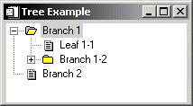

The WIDGET_TREE function is used to create and populate a tree widget. The tree widget presents a hierarchical view that can be used to organize a wide variety of data structures and information. The WIDGET_TREE function performs two separate tasks: creating the tree widget and populating the tree widget with nodes (branches and leaves). Branches on the tree can be expanded or collapsed by the user, displaying different portions of the structure.
|
 |
For a more detailed discussion of the tree widget, along with examples, see About Tree Widgets
Result = WIDGET_TREE( Parent [, /ALIGN_BOTTOM | , /ALIGN_CENTER | , /ALIGN_LEFT | , /ALIGN_RIGHT | , /ALIGN_TOP] [, BITMAP=array] [, /CONTEXT_EVENTS] [, DRAG_NOTIFY=string] [, /DRAGGABLE] [, /DROP_EVENTS] [, EVENT_FUNC=string] [, EVENT_PRO=string] [, /EXPANDED] [, /FOLDER ] [, FUNC_GET_VALUE=string] [, GROUP_LEADER=widget_id] [, INDEX=value] [, KILL_NOTIFY=string] [, /MASK] [, /MULTIPLE] [, /NO_COPY] [, NOTIFY_REALIZE=string] [, PRO_SET_VALUE=string] [, SCR_XSIZE=width] [, SCR_YSIZE=height] [, /SENSITIVE] [, TAB_MODE=value] [, TOOLTIP=string] [, /TRACKING_EVENTS] [, UNAME =string] [, UNITS={0 | 1 | 2}] [, UVALUE=value] [, VALUE=string] [, XOFFSET=value] [, XSIZE=value] [, YOFFSET=value] [, YSIZE=value] )
The returned value of this function is the widget ID of the newly-created tree widget.
The widget ID of the parent for the new tree widget. Parent can be either a base widget or a tree widget.
| • | If Parent is a base widget, WIDGET_TREE will create a tree widget that contains no other tree widgets. This type of tree widget is referred to as a root node. |
| • | If Parent is a tree widget, WIDGET_TREE will create a new tree widget (called a node) in the specified tree widget. |
Note: With the exception of the first tree widget created (the root node, whose Parent is a base widget), a tree widget (or node) must be created with the FOLDER keyword in order to serve as the Parent for other tree widgets.
Set this keyword to align the new widget with the bottom of its parent base. To take effect, the parent must be a ROW base.
Set this keyword to align the new widget with the center of its parent base. To take effect, the parent must be a ROW or COLUMN base. In ROW bases, the new widget will be vertically centered. In COLUMN bases, the new widget will be horizontally centered.
Set this keyword to align the new widget with the left side of its parent base. To take effect, the parent must be a COLUMN base.
Set this keyword to align the new widget with the right side of its parent base. To take effect, the parent must be a COLUMN base.
Set this keyword to align the new widget with the top of its parent base. To take effect, the parent must be a ROW base.
Set this keyword equal to a 16x16x3 array representing an RGB image that will be displayed next to the node in the tree widget. Set this keyword equal to 0 (zero) to use a default system bitmap.
Set this keyword to cause context menu events (or simply context events) to be issued when the user clicks the right mouse button over the widget. Set the keyword to 0 (zero) to disable such events. Context events are intended for use with context-sensitive menus (also known as pop-up or shortcut menus); pass the context event ID to the WIDGET_DISPLAYCONTEXTMENU within your widget program’s event handler to display the context menu.
For more on detecting and handling context menu events, see Context-Sensitive>Menus.
This keyword is only valid if the Parent of the tree widget is a base widget.
Set this keyword equal to a string containing the name of a function that will be automatically called as the end-user drags over the widget. Alternatively, set this keyword equal to the string:
| • | <inherit> (including the < and > characters) to have the widget inherit an ancestor’s callback |
| • | <default> (including the < and > characters) to use the system default callback. |
The callback function’s return value informs the widget system “if and where” the drag source can be dropped onto the widget. The widget system then uses this information to provide the end-user with visual feedback about the legality and location of a drop. A secondary ability of the return value is to turn on the plus (+) indicator, which can be handy to distinguish between copies and moves. The following table details the meanings of the valid return values, which can be OR-ed together:
|
Value |
Meaning |
|
0 |
User cannot drop |
|
1 |
User can drop above |
|
2 |
User can drop onto |
|
4 |
User can drop below |
|
8 |
Show the plus indicator |
When a DRAG_NOTIFY callback is not explicitly specified, it is inherited from the parent tree widget. If none of the widget's ancestor tree nodes have a DRAG_NOTIFY callback or the callback is set to the string <default> then the widget system uses a default that is suitable for copying and moving nodes. The default return values are detailed in the following table and further text:
|
Tree Widget Type |
Expanded |
Return Value |
Meaning |
|
Root |
|
2 |
Onto |
|
Folder |
No |
7 |
Above, Onto, Below |
|
Yes |
3 |
Above, Onto |
|
|
Leaf |
|
5 |
Above, Below |
The default callback also compares the dragged nodes with the destination. If the destination matches or is a descendant of any of the dragged nodes then the default callback returns 0 (zero). Finally, if the destination will not generate drop events (DROP_EVENTS = 0) then the default callback will return 0.
The drag notification callback routine has the following signature:
FUNCTION Callback_Function_Name, Destination, Source, $
Modifiers, Default
where
| • | Callback_Function_Name is the name of the callback function. This value is specified as the value of the DRAG_NOTIFY keyword. |
| • | Destination is the widget ID of the widget over which the item is dragged. |
| • | Source is the widget ID of the item's tree root being dragged (only tree widget nodes may be dragged). Get the list of dragged nodes by using WIDGET_INFO to query for the root's selected nodes. |
| • | Modifiers indicates the state of the modifier keys. The widget system generates them by OR-ing the following values together for the depressed keys: |
|
Bitmask |
Modifier Key |
|
1 |
Shift |
|
2 |
Control |
|
4 |
Caps Lock |
|
8 |
Alt |
Note: For UNIX, the Alt key is the currently mapped MOD1 key.
| • | Default is the value that the default callback would have returned. Although it is merely a suggested value, it can be used to screen out common situations that the default callback catches. A common usage is to have the callback return its value after modifying it to show the + indicator. |
Specifying a drag notification callback does not enable drop events; you must set the DROP_EVENTS keyword to specify that drop events should be generated. For additional information on dragging and dropping and tree widgets, see About Tree Widgets
Warning: Custom drag notifications can pose potential dangers, please see About Tree Widgets to learn more about these potential dangers.
Use this keyword to specify whether or not the widget can be dragged. A value of 1 (one) makes the widget a valid drag item and a value of 0 (zero) makes the widget not draggable. If this keyword is not specified or is set to -1 then the widget inherits its draggability from the nearest ancestor to set a value.
Note: Although the root node of a tree widget cannot be dragged nor inherit a value, the value can be set so that child nodes can inherit the value. The default value is 0.
Use this keyword to specify whether or not the widget will generate drop events. See Widget Events Returned by Tree Widgets for an explanation of the event structure.
A value of 1 (one) causes the widget to generate drop events and a value of 0 (zero) causes the widget to not generate drop events. If this keyword is not specified or is set to -1, the widget inherits this setting from the nearest ancestor that sets a value of zero or one.
Tree root nodes can generate drop events, but cannot inherit. Their default value is 0. Specifying a DRAG_NOTIFY callback does not affect a widget’s ability to generate drop events.
A string containing the name of a function to be called by the WIDGET_EVENT function when an event arrives from a widget in the widget hierarchy rooted at the newly-created widget.
A string containing the name of a procedure to be called by the WIDGET_EVENT function when an event arrives from a widget in the widget hierarchy rooted at the newly-created widget.
If the tree node being created is a folder (specified by the FOLDER keyword), set this keyword to cause the folder to be initially displayed expanded, showing all of its immediate child entries. By default, folders are initially displayed collapsed.
This keyword is only valid if the Parent of the tree widget is another tree widget.
Set this keyword to cause the tree node being created to act as a folder (that is, as a branch of the tree rather than a leaf).
Note: With the exception of the root node (the tree widget whose Parent widget is a base widget), only tree nodes that have the FOLDER keyword set can act as the parent for other tree widgets.
This keyword is only valid if the Parent of the tree widget is another tree widget.
A string containing the name of a function to be called when the GET_VALUE keyword to the WIDGET_CONTROL procedure is called for this widget. Using this technique allows you to change the value that should be returned for a widget. Compound widgets use this ability to define their values transparently to the user.
The widget ID of an existing widget that serves as group leader for the newly-created widget. When a group leader is killed, for any reason, all widgets in the group are also destroyed.
A given widget can be in more than one group. The WIDGET_CONTROL procedure can be used to add additional group associations to a widget. You cannot remove a widget from an existing group.
Use this keyword to specify the position of the new tree widget node relative to its siblings. The supplied value is the zero-based index of the new node. A value of -1 and values greater than or equal to the current number of children result in the new node being positioned as the last child. This is the default behavior when INDEX is not specified.
Set this keyword to a string that contains the name of a procedure to be called automatically when the specified widget dies. Each widget is allowed a single such “callback” procedure. It can be removed by setting the routine to the null string ('').
The callback routine is called with the widget identifier as its only argument. At that point, the widget identifier can only be used with the WIDGET_CONTROL procedure to get or set the user value. All other requests that require a widget ID are disallowed for the target widget. The callback is not issued until the WIDGET_EVENT function is called.
Set this keyword in conjunction with BITMAP to create a tree node icon that has transparency. When set to 1 (one), all bitmap pixels that match the lower left pixel are treated as transparent, allowing the widget's background color to show through. The default value is 0 (zero). The MASK keyword is ignored if not used with the BITMAP keyword.
Set this keyword to enable multiple selection operations in the tree widget. If enabled, multiple elements in the tree widget can be selected at one time by holding down the Control or Shift key while clicking the left mouse button.
This keyword is only valid if the Parent of the tree widget is a base widget.
Usually, when setting or getting widget user values, either at widget creation or using the SET_UVALUE and GET_UVALUE keywords to WIDGET_CONTROL, IDL makes a second copy of the data being transferred. Although this technique works well for small data, it can have a significant memory cost when the data being copied is large.
If the NO_COPY keyword is set, IDL handles these operations differently. Rather than copying the source data, it takes the data away from the source and attaches it directly to the destination. This feature can be used by compound widgets to obtain state information from a UVALUE without all the memory copying that would otherwise occur. However, it has the side effect of causing the source variable to become undefined. Upon a set operation (using the UVALUE keyword to WIDGET_TREE or the SET_UVALUE keyword to WIDGET_CONTROL), the variable passed as value becomes undefined. Upon a get operation (GET_UVALUE keyword to WIDGET_CONTROL), the user value of the widget in question becomes undefined.
Set this keyword to a string containing the name of a procedure to be called automatically when the specified widget is realized. This callback occurs just once (because widgets are realized only once). Each widget is allowed a single such callback procedure. This callback procedure can be removed by setting the routine name to the null string (''). The callback routine is called with the widget ID as its only argument.
A string containing the name of a procedure to be called when the SET_VALUE keyword to the WIDGET_CONTROL procedure is called for this widget. See the description of the PRO_SET_VALUE keyword to WIDGET_CONTROL for information on using this keyword.
Set this keyword to the desired screen width of the widget, in units specified by the UNITS keyword (pixels are the default). In many cases, setting this keyword is the same as setting the XSIZE keyword.
Set this keyword to the desired screen height of the widget, in units specified by the UNITS keyword (pixels are the default). In many cases, setting this keyword is the same as setting the YSIZE keyword.
Set this keyword to control the initial sensitivity state of the widget.
If SENSITIVE is zero, the widget becomes insensitive. If nonzero, it becomes sensitive. When a widget is sensitive, it has normal appearance and can receive user input. For example, a sensitive button widget can be activated by moving the mouse cursor over it and pressing a mouse button. When a widget is insensitive, it indicates the fact by changing its appearance, looking disabled, and it ignores any input.
Sensitivity can be used to control when a user is allowed to manipulate the widget.
Note: Some widgets do not change their appearance when they are made insensitive, but they cease generating events.
After creating the widget hierarchy, you can change the sensitivity state using the SENSITIVE keyword with the WIDGET_CONTROL .
This keyword is only valid if the Parent of the tree widget is a base widget.
Set this keyword to one of the values shown in the table below to determine how the widget hierarchy can be navigated using the Tab key. The TAB_MODE setting is inherited by lower-level bases and child widgets from the parent WIDGET_BASE unless it is explicitly set on an individual widget. If the TAB_MODE value of the widget differs from that of the base, the setting on the widget will be respected when the widget has focus. For example, if a base does not support tabbing, but an individual child widget does support tabbing, this functionality will be enabled when the child widget has focus.
Note: It is not possible to tab to disabled (SENSITIVE=0) or hidden (MAP=0) widgets.
Valid settings are:
|
0 |
Disable navigation onto or off of the widget. This is the default unless the TAB_MODE has been set on a parent base. Child widgets automatically inherit the tab mode of the parent base as described in Inheriting the TAB_MODE Value. |
|
1 |
Enable navigation onto and off of the widget. |
|
2 |
Navigate only onto the widget. |
|
3 |
Navigate only off of the widget. |
Note: In widget applications on the UNIX platform, the Motif library controls what widgets are brought into and released from focus using tabbing. The TAB_MODE keyword value is always zero, and any attempt to change it is ignored when running a widget application on the UNIX platform. Tabbing behavior may vary significantly between UNIX platforms; do not rely on a particular behavior being duplicated on all UNIX systems.
Once a WIDGET_TREE widget receives focus through tabbing, additional navigation capabilities are platform dependent:
| • | On Windows – tree widgets can receive and lose focus through tabbing. |
| • | On UNIX - the Motif library controls tabbing functionality. |
Use the arrow keys to select higher or lower level nodes once a tree widget has focus. The TAB_MODE specified for the root tree widget defines the tabbing support for all of its nodes.
After creating the widget hierarchy, you can change tabbing support using the WIDGET_CONTROL procedure’s TAB_MODE keyword, or query a widget’s support for tabbing using the WIDGET_INFO procedure’s TAB_MODE keyword.
See Tabbing in Widget Applications for usage details and examples.
Set this keyword to a string that will be displayed when the cursor hovers over the widget. For UNIX platforms, this string must be non-zero in length.
Note: If your application uses hardware rendering and a RETAIN setting of either zero or one, tooltips will cause draw widgets to generate expose events if the tooltip obscures the drawable area. This is true even if the tooltip is associated with another widget.
Set this keyword to cause widget tracking events to be issued for the widget whenever the mouse pointer enters or leaves the region covered by that widget. For the structure of tracking events, see TRACKING_EVENTS in the documentation for WIDGET_BASE.
This keyword is only valid if the Parent of the tree widget is a base widget.
Set this keyword to a string that can be used to identify the widget in your code. You can associate a name with each widget in a specific hierarchy, and then use that name to query the widget hierarchy and get the correct widget ID.
To query the widget hierarchy, use the WIDGET_INFO with the FIND_BY_UNAME keyword. The UNAME should be unique to the widget hierarchy because the FIND_BY_UNAME keyword returns the ID of the first widget with the specified name.
Set this keyword to specify the units used when supplying measurements or position values. Set UNITS equal to 0 (zero) to specify that all measurements are in pixels (this is the default), to 1 (one) to specify that all measurements are in inches, or to 2 (two) to specify that all measurements are in centimeters. This keyword does not change the units used in a widget event structure or in most of the fields of the geometry structure returned by WIDGET_INFO.
The user value to be assigned to the widget.
Each widget can contain a user-specified value of any data type and organization. This value is not used by the widget in any way, but exists entirely for the convenience of the IDL programmer. This keyword allows you to set this value when the widget is first created.
If UVALUE is not present, the widget’s initial user value is undefined.
Set this keyword equal to a string containing the text that will be displayed next to the branch or leaf of the tree. If the widget value is not explicitly set, either in the call to WIDGET_TREE or using the SET_VALUE keyword to WIDGET_CONTROL, the default value of “Tree” is provided.
Note: You can use language catalogs to internationalize this value with strings in particular languages.
This keyword is only valid if the Parent of the tree widget is another tree widget.
The horizontal offset of the widget in units specified by the UNITS keyword (pixels are the default) relative to its parent. This offset is specified relative to the upper left corner of the parent widget.
Specifying an offset relative to a row or column major base widget does not work because those widgets enforce their own layout policies. This keyword is primarily of use relative to a plain base widget. You should avoid using this style of widget programming.
The width of the widget in units specified by the UNITS keyword (pixels are the default). Most widgets attempt to size themselves to fit the situation. However, if the desired effect is not produced, use this keyword to override it. This keyword is only a hint to the toolkit and may be ignored in some situations.
The vertical offset of the widget in units specified by the UNITS keyword (pixels are the default) relative to its parent. This offset is specified relative to the upper left corner of the parent widget.
Specifying an offset relative to a row or column major base widget does not work because those widgets enforce their own layout policies. This keyword is primarily of use relative to a plain base widget. You should avoid using this style of widget programming.
The height of the widget in units specified by the UNITS keyword (pixels are the default). Most widgets attempt to size themselves to fit the situation. However, if the desired effect is not produced, use this keyword to override it. This keyword is only a hint to the toolkit and may be ignored in some situations.
A number of keywords to the WIDGET_CONTROL affect the behavior of tree widgets. In addition to those keywords that affect all widgets, the following keywords are particularly useful: CONTEXT_EVENTS, SET_DRAG_NOTIFY, SET_DRAGGABLE, SET_DROP_EVENTS, SET_MASK, SET_TREE_BITMAP, SET_TREE_EXPANDED, SET_TREE_INDEX, SET_TREE_SELECT, SET_TREE_VISIBLE.
Some keywords to the WIDGET_INFO return information that applies specifically to tree widgets. In addition to those keywords that apply to all widgets, the following keywords are particularly useful: CONTEXT_EVENTS, DRAG_NOTIFY, DRAGGABLE, DROP_EVENTS, MASK, TREE_BITMAP, TREE_DRAG_SELECT, TREE_EXPANDED, TREE_FOLDER, TREE_INDEX, TREE_ROOT, TREE_SELECT.
Tree widgets generate events when tree elements are selected or deselected, expanded or collapsed. They can also be configured to generate events when the user clicks the right-hand mouse button over the widget. Several variations of the tree widget event structure depend upon the specific event being reported. All of these structures contain the standard three fields (ID, TOP, and HANDLER). Programs should always check the event structure name before referencing fields that are not present in all tree event structures. The different tree widget event structures are described below.
This structure is returned when a drop event occurs:
{WIDGET_DROP, ID:0L, TOP:0L, HANDLER:0L, DRAG_ID:0L,
POSITION:0L, X:0L, Y:0L, MODIFIERS:0L}
To receive this event the widget must accept drop events (see DROP_EVENTS for details). The ID field reports the destination widget and the DRAG_ID reports the source. The POSITION field indicates where the user dropped. The possible values are similar to those of the DRAG_NOTIFY callback, but only one of the three possible positions is returned:
|
Position |
Meaning |
|
1 |
The user is inserting above the destination widget |
|
2 |
The user is dropping onto the destination widget |
|
4 |
The user is inserting below the destination widget |
The X and Y fields give the pixel coordinates of the drop event relative to the upper left corner of the destination's root tree. Finally, the modifiers field reports which keys were pressed at the time the drop event was generated. The MODIFIERS field is a bitmask of four values:
|
Bitmask |
Modifier Key |
|
1 |
Shift |
|
2 |
Control |
|
4 |
Caps Lock |
|
8 |
Alt |
This structure is returned when the currently selected node in the tree widget changes:
{WIDGET_TREE_SEL, ID:0L, TOP:0L, HANDLER:0L, TYPE:0, CLICKS:0L}
The CLICKS field indicates the number of mouse-button clicks that occurred when the event took place. This field contains 1 (one) when the item is selected, or 2 when the user double-clicks on the item.
This structure is returned when a folder in the tree widget expands or collapses:
{WIDGET_TREE_EXPAND, ID:0L, TOP:0L, HANDLER:0L, TYPE:1, EXPAND:0L}
The EXPAND field contains 1 (one) if the folder expanded or 0 (zero) if the folder collapsed.
A tree widget created with the CONTEXT_EVENTS keyword set returns the following event structure in response to a right mouse button click:
{WIDGET_CONTEXT, ID:0L, TOP:0L, HANDLER:0L, X:0L, Y:0L,
ROW:0L, COL:0L}
The first three fields are the standard fields found in every widget event. The X and Y fields give the device coordinates at which the event occurred, measured from the upper left corner of the tree widget. The ROW and COL fields return meaningful information for table widgets and values of zero (0) for other widgets.
|
5.6 |
Introduced |
|
6.1 |
Added TAB_MODE keyword Added ROW and COL fields to WIDGET_CONTEXT event structure |
|
6.3 |
Added DRAG_NOTIFY, DRAGGABLE, DROP_EVENTS, INDEX, and MASK keywords Added Drop event Deprecated TOP keyword |